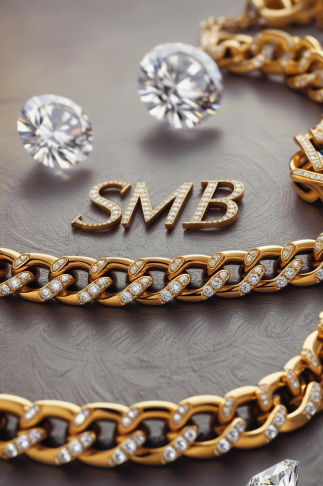

In the world of jewelry, some names are remembered, some are immortalized… SMB is the mark of eternal luxury. Every creation is not just gold or gemstones, but a royal secret that brings positive energy, giving the wearer pride, confidence, and joy found only in rare SMB treasures.
Owning an SMB piece is more than a purchase… it’s a royal emotional experience. A moment when luxury touches your soul, making you realize that happiness lies not in owning things, but in owning rare pieces that set you apart.
“SMB… not just a brand, but a secret of luxury understood only by those who have lived a royal experience.”